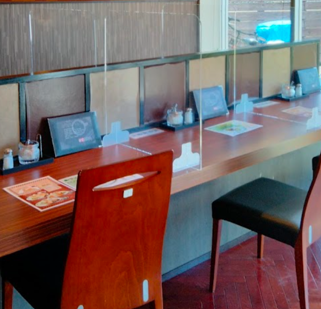
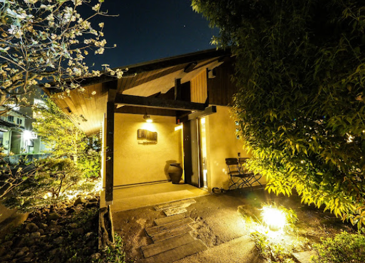
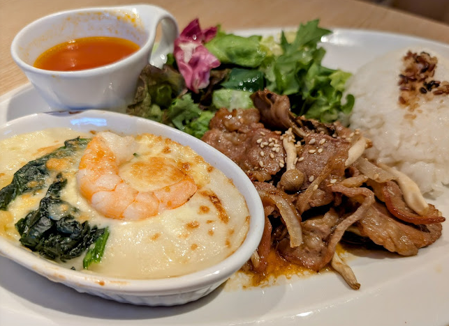
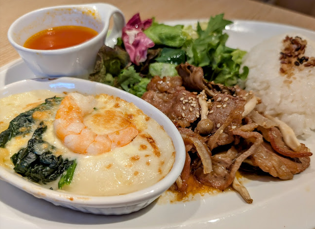

豊橋のカフェ５選
豊橋のカフェ 比較早見表
結果だけ知りたい方は表だけでOK！
豊橋のカフェの料金・メニュー・ゆっくりできるかについて5段階評価で比較しました。
詳細は以下をご参照ください！
| カフェ名 | 料金 | メニュー | ゆっくりできるか |
|---|---|---|---|
| メルシーズカフェ | ★★★☆☆ | ★★★★★ | ★★★★★ |
| モカとチャイ | ★★★☆☆ | ★★★★☆ | ★★★☆☆ |
| Cafe Accordiana | ★★★☆☆ | ★★★★☆ | ★★★☆☆ |
| むさしの森珈琲 | ★★★☆☆ | ★★★★★ | ★★★★★ |
| so good coffee & bake | ★★★☆☆ | ★★★★★ | ★★☆☆☆ |
豊橋のカフェ
１： メルシーズカフェ


料金: 1000～2000円
詳細
豊橋の向山アピタ裏にあるおしゃれなカフェです。
向山公園の近くなので、お花見や散歩がてら立ち寄るのも良いかもしれません。
メニューは豊富で、ランチからケーキまで様々あります。
お水がセルフサービスなのはかなり有難く、混んでいなければ長居も可能です！
２： モカとチャイ

料金: 1000円前後
詳細
豊橋の三ノ輪の通りにあります。
珈琲豆販売店が併設されているので、コーヒー好きにピッタリのお店です。
モカとチャイという名前の通り、珈琲とチャイが美味しいです。
ドリンクだけでなく軽食としてサンドイッチやケーキも用意されているのは有難いですね。
人気店なので混雑してきたら長居はできません。
３： Cafe Accordiana



料金: 1000円前後
詳細
豊橋の佐藤町にあるおしゃれなカフェです。
サクサクのアップルパイが有名で、筆者も何度かリピートしています。
珈琲もとても美味しかったことを記憶しています。
店内は木の温もりが感じられる落ち着いた雰囲気で、自然と会話も弾みます。
店名の由来は店主が弾くことのできるアコーディオンで、まれに演奏していただけるそうです。
人気店なので混雑してきたら長居はできません。
４： むさしの森珈琲
 


料金: 1000～2000円
詳細
ガストのすかいらーくグループの系列店です。
内装はおしゃれで落ち着いた雰囲気です。
ファミレスに似たファミリータイプの席もあるので、ファミリーにもおすすめです。
メニューは豊富で、ランチ、ディナーはそれぞれ1000円と少しで済みます。
ファミレスとカフェを合体させたような、そんな雰囲気があります。
夜10時まで営業しているのもうれしいですね。
５： so good coffee & bake
料金: 1000～2000円
詳細
豊橋駅西口の通りを西に進むとあるカフェです。
イートインだけでなくテイクアウトのお客さんも多く、混雑時が多いです。
人気店なので長居はできないです。
しかし、さすがは人気店、ケーキは種類豊富で本当にきれいで美味しいです！
終わりに
以上、豊橋のカフェを５つご紹介しました。
紹介しきれなかったカフェが豊橋にはまだまだあります！
ぜひ、皆さんもお気に入りのカフェを探してみましょう！